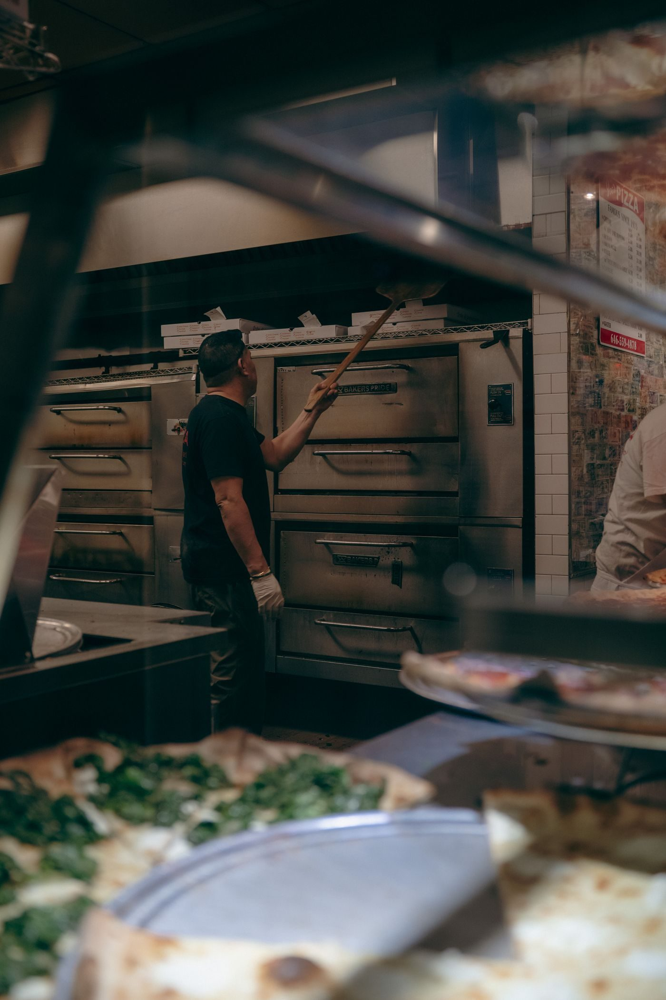

From the oven


San Giorgio Pizzeria Napoletana is a wood-fired Neapolitan pizzeria in Milwaukee and the first restaurant in Milwaukee certified by the Associazione Verace Pizza Napoletana, the 97th in the United States to earn that certification. Pies are cooked in about 90 seconds in an Italian wood-fired oven. The restaurant offers cocktails and wine, outdoor seating, and takeout. Call for reservations.

838 N Old World 3rd St, Milwaukee, WI 53203
Tuesday to Thursday 5:00 PM to 9:00 PM; Friday and Saturday 4:30 PM to 10:00 PM; Sunday and Monday closed